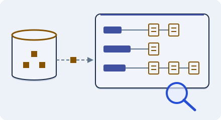

Scale the data · 3 minutes
Search is a copy
A search index is a second copy of your data, shaped for finding words fast.
Open this lesson
Looking up is not searching
A database finds a row by its id quickly. Finding every row that mentions "red shoes" is a different job. A search index keeps a word-to-document map built just for that, and it is a copy, kept up to date by a feed of changes.
Slightly behind again
The database is authoritative; the word index is a maintained copy. Change a document, search before delivery, then catch the index up.
Try the idea
Search is crushing the database. Move it to a search index and keep the index fed.
Key numbers
- Index update delay
- ≈ 1 to 5 s. approx.
- Search query
- ≈ 20 to 50 ms. approx.
- Index size versus data
- ≈ 1 to 3 times. depends on what you index, approx.
Check your reasoning
Think through these questions before opening the lesson. In the game you can test the idea and compare your reasoning.
- Which is the source of truth?
- You add an item and cannot find it for a second. Why?
- Why not use the database for all search?
The key point
Keep one source of truth and feed purpose-built copies for search.
Practise this idea
- Medium
Search autocomplete
As people type, they expect suggestions after every letter, in the blink of an eye. Most people type the same popular beginnings. When news breaks, one phrase suddenly dominates.
- Medium
Music streaming
People search for songs, build playlists and press play. The audio is the heavy part, and a hit song is played by millions at once. Playback must not stutter, even when part of your system fails.
- Medium
Pharmacy stock and refills
A pharmacy chain with 4,000 stores tracks how many boxes of each medicine every store has, takes refill requests, and shows patients which nearby store has their medicine today. If the system says a store has a box that is gone, a patient makes a wasted trip.
- Medium
Hotel booking
You run a hotel booking site. People search for rooms, open hotel pages and book. Search can be a little behind, but you must never sell the last room twice. Bots copy your prices all day, and sometimes the payment company slows down.